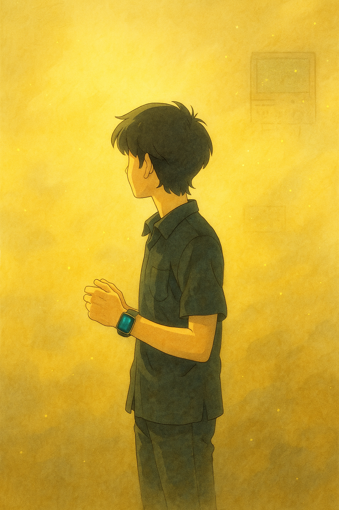

Biodata
Perkenalkan, saya Mario (biasa dipanggil Mario atau Rio), 24 tahun, tinggal di Kebon Jeruk, Jakarta Barat. Dulu saya gemar bermain game online seperti Mobile Legends dan Tekken 8—dari sana saya belajar pentingnya menetapkan target, pantang menyerah, dan terus mencoba meski merasa stres atau gagal. Kini saya mengurangi waktu bermain untuk fokus mengejar impian menjadi web developer, karena saya yakin ketekunan dan fokus adalah kunci keberhasilan.
Pendidikan dasar saya di SD tidak mudah: saya sempat diremehkan dan bahkan diperlakukan tidak adil oleh seorang guru hanya karena fisik dan kemampuan saya. Beruntung ada guru lain yang peduli, membimbing saya, dan membuka mata saya akan potensi di pelajaran Matematika. Berkat dukungannya, saya berhasil menjadi salah satu dari lima siswa yang lolos ke sekolah negeri impian—dengan nilai Matematika termasuk yang tertinggi—dan kini saya bertekad, jika kelak sukses, memberikan penghargaan istimewa sebagai ungkapan terima kasih kepada beliau.